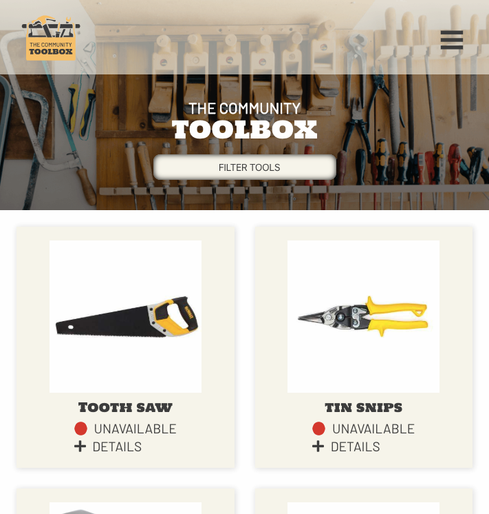

“I may not have gone where I intended to go, but I think I have ended up where I needed to be.” ― Douglas Adams, The Long Dark Tea-Time of the Soul

A little about me
My coding school, Thinkful, taught me that we never stop growing or learning. When I'm not finding new
drills or code challenges to work, I spend my time in a variety of ways. Living in Portland means access to
world class soccer, art, nature, and farmers' markets.
As a Timbers and Thorns fan, I joined the 107ist
Supporters group. I spend some of my time giving back to the community through volunteer activities that
support the growth of soccer and equality throughout our area. The 107ist supporters pull together as a team,
which is something I've found I enjoy in my experience with Thinkful's Engineering Immersion team
approach.
Programming, especially with an eye towards making things accessible to all, is my current
passion. Working with a variety of people in class has helped me find the things I'm good at doing and taught
me that it's okay to not know the answer right away. The great thing about tech and me is that we both grow
and change with time. Seems like I found my niche.
My primary tech stack from Thinkful includes HTML, JS, CSS, React, Node.js, Express, PostgreSQL. I'm looking forward to expanding on that knowledge and learning more languages.
top
A Sample of Projects
City Look-Up

City Look-Up is designed to help people who may be interested in relocating to a new
city. The idea is that with a quick search the user will see data on cost of living and quality of life,
along with a local map and a random picture from the city's coordinates.
This app uses API data from
both MapBox and Teleport. The app is built with HTML, CSS, and JS.
Lesfic Repository

For readers of genres that don't make the mainstream marketing cut, it can be tough
to find the books that you're looking for when searching places like Amazon. I'm and both a reader and
writer of lesbian fiction (lesfic) and I've searched countless times for new works in lesbian paranormal
fiction and come up with countless books featuring men. Not what I asked for-thanks anyway.
My
frustration with a lack of a solid catalogue of strictly stories that feature women who identify as
lesbians became a goal to create such a repository. I'm planning on crowd-sourcing the work of filling the
database to the Golden Crown Literary Society-an Organization I've been a proud member of for years and
whose sole mission is to promote the entire genre of lesbian writing.
The Community Toolbox
 The Community Toolbox is an app that allows community-run lending libraries work
more efficiently in their areas. With slight adaptations the app is designed to help users find the tools
they need for home improvement and garden/lawn care tasks without the investment cost and need for storage
of seldom used, bulky tools.
This was a team Capstone project during which I worked as project
manager
for my five person team. We thankfully had a team member well versed in design. In three weeks we managed
to do an extensive app involving predictive text search, building a multi table database, public and
private routing, JWT auth, and integrated the use of Cloudinary and Google Maps API. Our demo is availble
with the user name and the password as Demo.
top


top